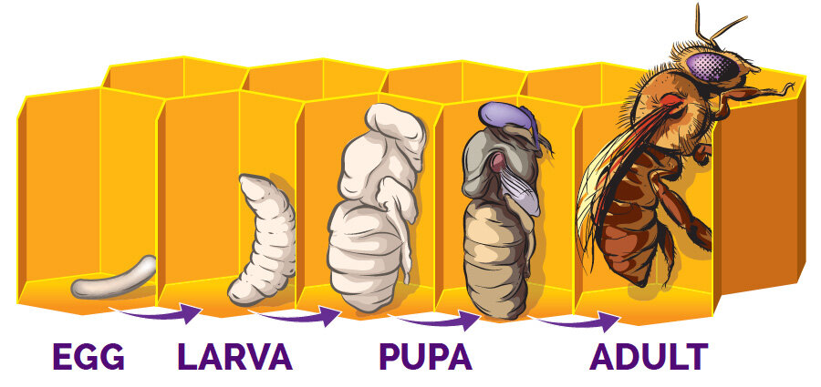
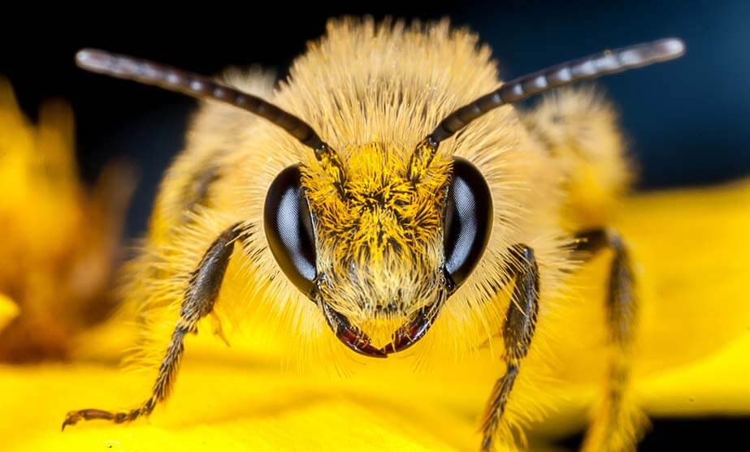
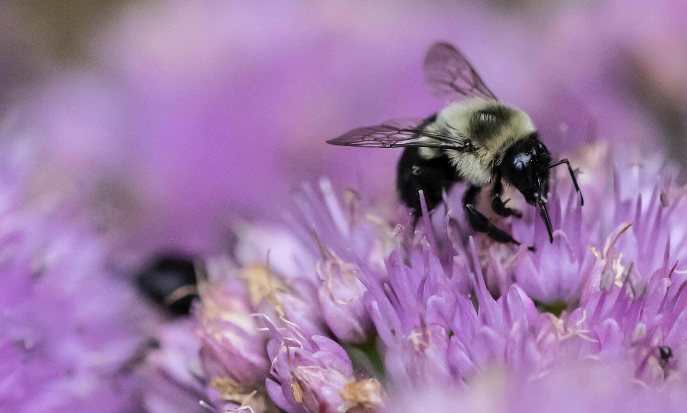

Bees experience holometabolous development. The life cycle of the bee begins when the queen lays an egg in a honeycomb cell. In 3 days, the egg begins 3 stages of development: larva to pupa to adult bee. The duration of each stage depends on the type of bee.
The aspects of a bee’s life vary, depending on the seasons they emerge, what flowers they can gather food from, and whether they are solitary or social.
Solitary Bees
Most solitary bees have one generation of adults each year and are only active for a short period of time. They tend to emerge when their favorite plants are flowering.
Before becoming adults, most solitary bees go through a state of diapause. During diapause, bees are resistant to dry conditions and can conserve their energy for long periods of time. Some solitary bees can stay in this state for 10 years! Diapause allows solitary bees to wait for the right nest-building and foraging conditions. The offspring of these bees stay in the nest until the right conditions return.-MuseumOfTheEarth
Social Bees
Social bees produce multiple generations of adult bees each year and are active for many months. Social bees can have annual life cycles (new nests are founded each year) or perennial life cycles (nests persist over multiple years).-MuseumOfTheEarth
The life cycle of a social bee starts with a queen bee, who builds a new nest in the early spring and cares for the first generation of workers until they reach adulthood. After the workers emerge, the queen stays in the nest to produce more workers throughout the summer. Her worker bees busily forage for nectar and pollen, build brood cells, and defend the nest.
In late summer, the colony switches to producing reproductive male and female bees. Annual colonies, like those of bumblebees and sweat bees, perform this process over the course of a single year. Perennial colonies, like those of stingless bees and honey bees, engage in this cycle repeatedly over many years.
Honey Bees

Native Bees
The world is home to 21,000 species of bees — and more are discovered every year. North America is home to 4,000 species, including bumblebees, carpenter bees, and leaf cutter bees. They come in colors ranging from rich hues of yellow to vibrant blues and greens. Unlike honey bees, 90% of native bees live solitary lives. They don’t live in colonies, build hives, make honey or wax, and or form swarms. About 70% of them nest underground, and the remaining 30% nest in cavities or holes in wood or hollow broken stems. Most solitary bees have a short lifespan as flying adults. For example, male mason bees only fly for 2 weeks (long enough to mate), and female mason bees actively fly for 4 to 6 weeks. This short lifespan also drives some solitary bees to have a short flying range from home, too; once they establish a home they only fly a few hundred feet from their nesting site. Most of a solitary bee’s life is spent in their nesting site hibernating over the winter.-TheBeeConservacy
Data Source: TheBeeConservacy